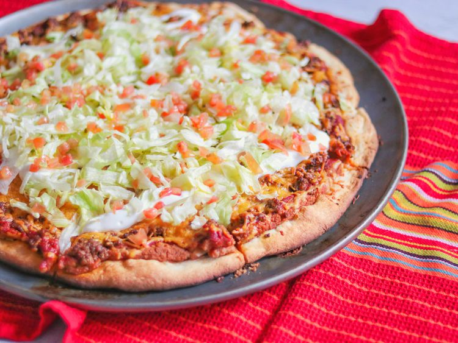

Back to Home
How to make pizza

Everybody loves pizza. Everybody loves tacos. Do you love taco pizzas? Find out here with this easy recipe!
You don't need lots of ingredients or experience with cooking, making this a dish for everybody.
Ingredients
- 10 fluid ounces warm water
- 1 (6 ounce) can tomato paste
- ¼ cup chopped onion
- ½ pound ground beef
- 4 cups shredded Cheddar cheese
Preparation
- Add water, salt, oil, flour and yeast to your bread machine in the order listed.
- Meanwhile, in a small bowl, combine tomato paste, water, and 3/4 of the package of taco seasoning mix
- Cook ground beef in a large skillet over medium heat
- Preheat the oven to 400 degrees
- ...
To unlock the rest of this recipe, you have to be a subscriber. Join now for only $29,99 per day!